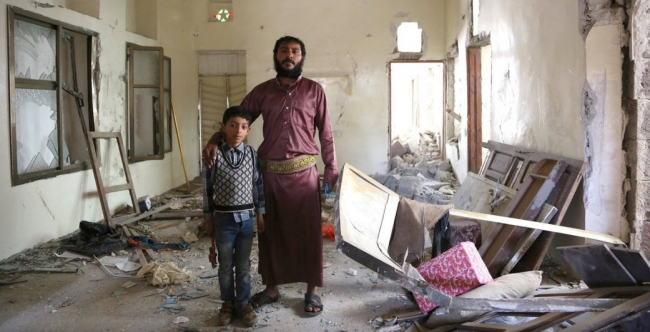
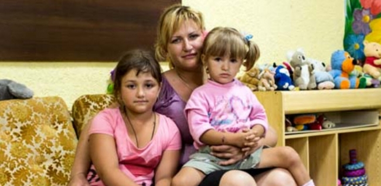
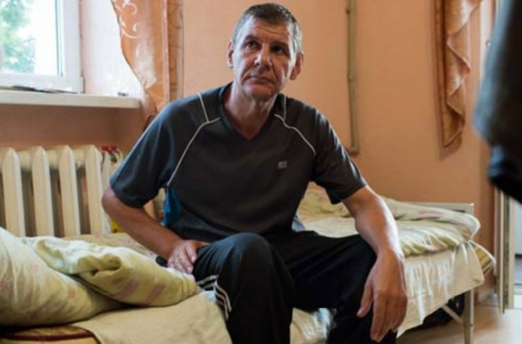
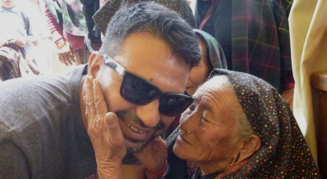
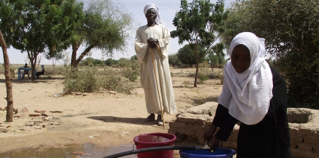

Core Responsibilities: the foundation of the World Humanitarian Summit
Ban Ki-moon, the United Nations Secretary-General, has devoted his life to public service. But his childhood began in the shadow of conflict: as a six-year-old boy, he and his family fled their home in Korea during the 1950s war. He could see his village burning as they left, his family filled with fear and uncertainty. “I could not have known that my darkest hour would so profoundly shape my destiny,” he said.
Not since the Second World War have global humanitarian needs been so high. From the crisis in Syria and the drought in Ethiopia, to the conflict in Sudan and the violence in the Lake Chad Basin, more than 125 million people around the world whose lives have been devastated by conflict and disaster desperately need humanitarian aid and protection.
Inspired by his own experiences of war, and knowing that today’s challenges are global, borderless and beyond the capacity of any one country or organization to resolve, Mr. Ban called to hold the first-ever World Humanitarian Summit. The Summit will be an opportunity for leaders from Governments, aid organizations, crisis-affected communities, the private sector and academia to come together and commit to take action to prevent and end suffering, reduce the impact of future crises and transform financing to save lives.
The Summit—a culmination of three years of consultations with more than 23,000 people in 150 countries—takes place in Istanbul, Turkey, on 23 and 24 May 2016. It marks a turning point to close the gap between the world that is and the world that should be; an opportunity to hold each other to account and find better ways to address the challenges facing the world’s most vulnerable people.
The Agenda for Humanity outlines five different areas in which we must take collective action. In a series of 5 features we will explore these core responsibilities through the eyes of those who need them the most: the affected people. Our hope is that the Summit will be the turning point to close the gap between the world that is and the world that should be.
Core Responsibility 1: Prevent and end conflict
Unless political leaders show the will to prevent and end crises, little will change for the millions of children, women and men who are caught up in these crises. Leaders—including UN Security Council members—must put compassion and courage at the heart of their collective decision-making. They must analyse the risk of conflict and act early to nip conflicts in the bud. They must use all the leverage they have—political, economic and otherwise—to prevent conflicts and find solutions. And they need to put aside divisions to invest in peaceful and inclusive societies.

Abu Mohamed, former Engineer
Sana’a, Yemen
Abu Mohamed, a former Engineer, showed OCHA staff members around his house in Yemen. Everything had been destroyed. When we asked him what he needed the most, he had a straight answer: “Safety. That’s the only thing we need. Safety and protection. All the rest is not as important.”
“Imagine your child in front of you. He is hungry, but you are unable to feed him. He is frightened, but you are unable to protect him. The people of Yemen need help, desperately. They need the world to care and they need the international community to stop this conflict.”
Core Responsibility 2: Respect rules of war
Yes, there are international humanitarian and human rights laws on the books. And yes, most States have signed onto them. But unless these laws are respected and monitored by State and non-State fighting parties, and unless violators are held to account each time they break them, then civilians will continue to make up the vast majority of people killed in conflict. Civilian infrastructure—hospitals, schools, water-pumping stations, people’s houses—will continue to be destroyed with impunity. Unless humanitarian law is truly respected, civilians will continue to be trapped by warring parties. Unless these laws are respected, aid workers and volunteers will either continue to be barred from accessing people in need, or they will be put in danger while trying to do so.

Ellina's story
Semenivka, Ukraine
“My daughter’s friend Andrina went to the same dancing school [as my girls].Her mum came to pick her up from school on a bike. She put her on the bike behind her. The shelling started and the shrapnel hit the girl’s backpack. It went through and killed the girl.”

Gennadiy's story
Semenivka, Ukraine
Gennadiy is a retired mine worker. He was with his wife when she was killed by shelling. “We were outside, standing in the line for bread. My wife was behind me. It happened so fast and unexpectedly. I just heard two things passing by, like a whistle. I knew her voice so well, we were married for 29 years. Her name was Milatovana. God bless her soul. We thought we would celebrate our thirtieth anniversary this year, but now we never will.”
Core Responsibility 3: Leave no one behind
Imagine being one of the most vulnerable people in the world. You’ve been forcibly displaced, or drought has killed your harvest for a fifth year running. You are Stateless, or you are being targeted because of your race, religion or nationality. Now imagine the world says that none of these people will be left behind—that the world’s poorest will be targeted in development programmes, that world leaders will work to halve displacement and come up with strong plans to protect them, that women and girls will be empowered and protected, and that all children, whether in conflict zones or displaced, will be able to attend school. All of this could be a reality if leaders make and put into action these bold commitments.

Dr. Bishal Dhakal's story
Nepal
“When I was a small kid, I would go to Red Cross gatherings to areas affected by flooding to distribute [survival] kits. If I take my child [to witness these situations], from now on he will be a socially conscious animal. I grew up in that culture where humanitarian service was fabled.”
Physician and former surgeon Dr. Bishal Dhakal sprang into action within hours of the 25 April earthquake in Nepal, becoming the first Nepali doctor to reach Barpak village in Gorkha, the epicentre of the quake. Emergency response was in his blood. By the second day after the quake, he had recruited 10 volunteers; by the fifth day, he had 2,000.
“This was a spontaneous integration of young people for venting in a social grief,” said Dr. Dhakal. “For me, citizenship is playing your role when needed.”
Collecting money was not Dr. Dhakal’s forte, so he enlisted some business friends to do so. While he continued to provide aid and medical assistance to affected communities, his business friends helped raise an amazing US$1.6 million worth of goods and services. “That is civilian volunteerism,” he explained. “It’s about how you connect the dots.”
Core Responsibility 4: Working differently to end need
Sudden natural disasters will take us by surprise, but many of the crises we respond to are predictable. Imagine working with at-risk communities and partners to help them prepare for crises so they are less vulnerable when crises strike. Imagine if we not only collected better data on crisis risk, but also acted on it early. By doing this, we could reduce risk and vulnerability at a global scale.

Ranh Nguyen, Farmer
Binh Dinh, Vietnam
For millions of people in rural Vietnam, the impacts of climate change are mounting and sometimes deadly. As weather patterns change, many of Vietnam’s women in particular are paying a high price.
Ranh Nguyen, a 35-year-old farmer, explained: “The weather becomes more extreme and erratic. Storms, heavy rains and floods destroy fields and houses and kill animals and people every year,” she said.
Ranh and her neighbours joined the Women’s Union and work with UN Women to strengthen the role of women in disaster risk reduction and disaster-reduction management. “Last year … we prepared better for our families and our village before the storm came … Thanks to good preparation and detailed mapping that we developed in the meetings before each storm, nobody in the village was killed or injured severely in last year’s storm season. Crops, fowl and cattle were saved,” said Ranh. “I could not swim before and used to be frightened by the flooded river. But now I am no longer afraid of water thanks to the swimming classes. I will teach my children how to swim and tell other people to learn how to swim too.”
This story was published by UN Women.
Core Responsibility 5: Invest in Humanity
If we really want to act on our responsibility to vulnerable people, we need to invest in them politically and financially. What does this mean? It means increasing funding not only to response, but also to risk and preparedness, to protracted conflicts and to peacebuilding. It means boosting local response through more funding to national NGOs and to pooled funds. It means stopping blocks to crucial investments, such as remittances flows. And it means being more creative about how we fund, using loans, grants, bonds and insurance mechanisms; by working with investment banks, credit card companies and Islamic social finance mechanisms, as well as with donors. It requires donors to be more flexible in the way they finance crises, including giving longer-term funding. And it requires aid agencies to be as efficient as possible and transparent about how they are spending their money. These shifts will only be effective if we put the financing of collective goals at the heart of our efforts, rather than supporting individual projects.

Al Tayeb Idris, Teacher
Azerni, West Darfur, Sudan
“The new solar-powered water pumps have changed our lives,” said Al Tayeb Idris, a Teacher and member of the village’s water-management committee. “Water now pumps daily. Before, the cost and unreliability of the motorized system meant that we were lucky if water was pumping just twice a week.”
The project was funded by the OCHA-managed Sudan fund. “The lack of water used to be a source of friction, often resulting in violence between the residents of Azerni and the seasonal nomadic population” said Abdul Malik, Azerni’s Omda (village chief). “Since we have been using the solar-powered water pumps, we have enough water to share with the nomads, leading to more harmonious relations.”

{kind=link}